Laporan Praktikum 3: Input Widgets & Forms (Menangkap Data, Dropdown, dan Validasi)
Pendahuluan
Praktikum ini bertujuan untuk memahami cara menangkap data
masukan dari pengguna pada aplikasi Flutter menggunakan
'controller', menerapkan widget dropdown statis untuk pemilihan
kategori, serta menerapkan validasi input agar mencegah data
kosong atau format yang salah tersimpan ke dalam sistem.
Validasi dilakukan melalui fungsi 'validator' pada setiap
'TextFormField'. Jika fungsi tersebut mengembalikan nilai null,
data dianggap valid dan tidak ada error yang ditampilkan.
Sebaliknya, jika fungsi mengembalikan sebuah String, data
dianggap tidak valid dan pesan error tersebut akan tampil
berwarna merah di bawah kolom terkait.
Langkah Kerja
Membuat file baru bernama 'add_transaction_screen.dart'. Karena isi formulir (teks & dropdown) akan terus berubah saat pengguna mengetik, dibuat class 'AddTransactionScreen' yang meng-extend 'StatefulWidget'. Pada class state-nya, '_AddTransactionScreenState', disiapkan 'GlobalKey<FormState>' bernama '_formKey' untuk memicu validasi, serta dua 'TextEditingController' ('_titleController' dan '_amountController') untuk judul dan nominal transaksi, ditambah variabel '_selectedCategory' dengan nilai default 'Makanan' untuk dropdown.
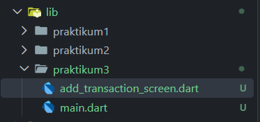
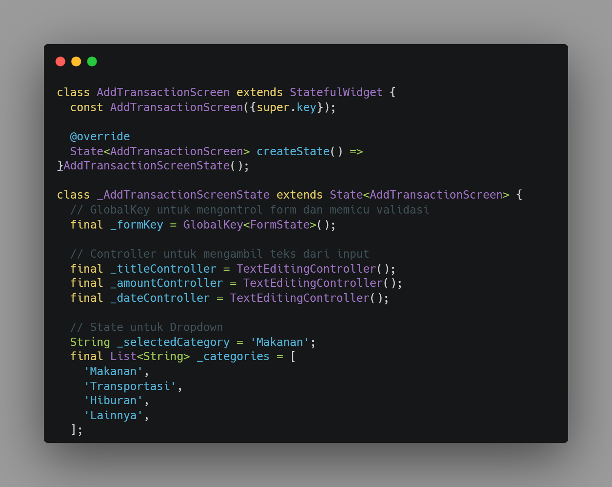
Membungkus seluruh kolom input dengan widget 'Form' dan menghubungkan properti 'key' ke '_formKey'. Setiap 'TextFormField' dihubungkan dengan 'controller' masing-masing: kolom "Judul Transaksi" divalidasi agar tidak boleh kosong, sedangkan kolom "Nominal (Rp)" menggunakan 'keyboardType: TextInputType.number' serta validasi wajib diisi dan harus berupa angka menggunakan 'int.tryParse()'.
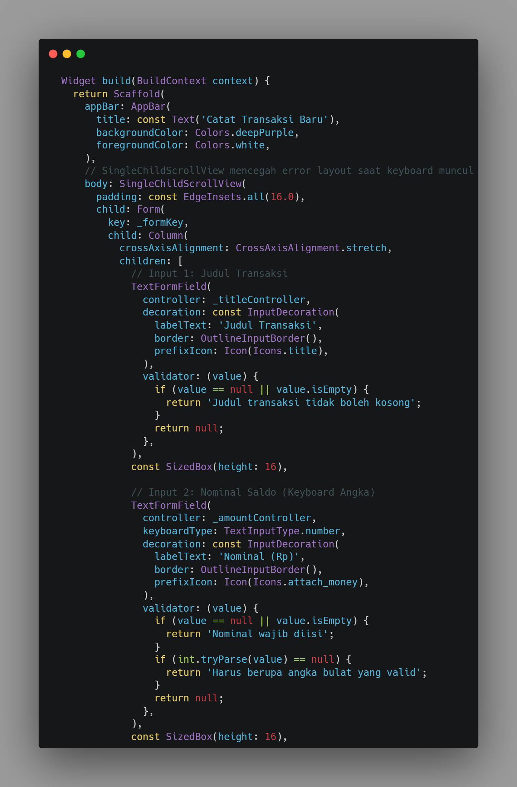
Menambahkan 'DropdownButtonFormField<String>' untuk memilih kategori transaksi (Makanan, Transportasi, Hiburan, Lainnya), dengan 'value' terhubung ke '_selectedCategory' dan 'onChanged' memanggil 'setState()' untuk memperbarui pilihan. Selanjutnya ditambahkan 'ElevatedButton' dengan 'onPressed' yang memanggil '_formKey.currentState!.validate()' untuk menjalankan seluruh validator; jika semua input valid, akan muncul 'SnackBar' berwarna hijau sebagai notifikasi transaksi berhasil disimpan.
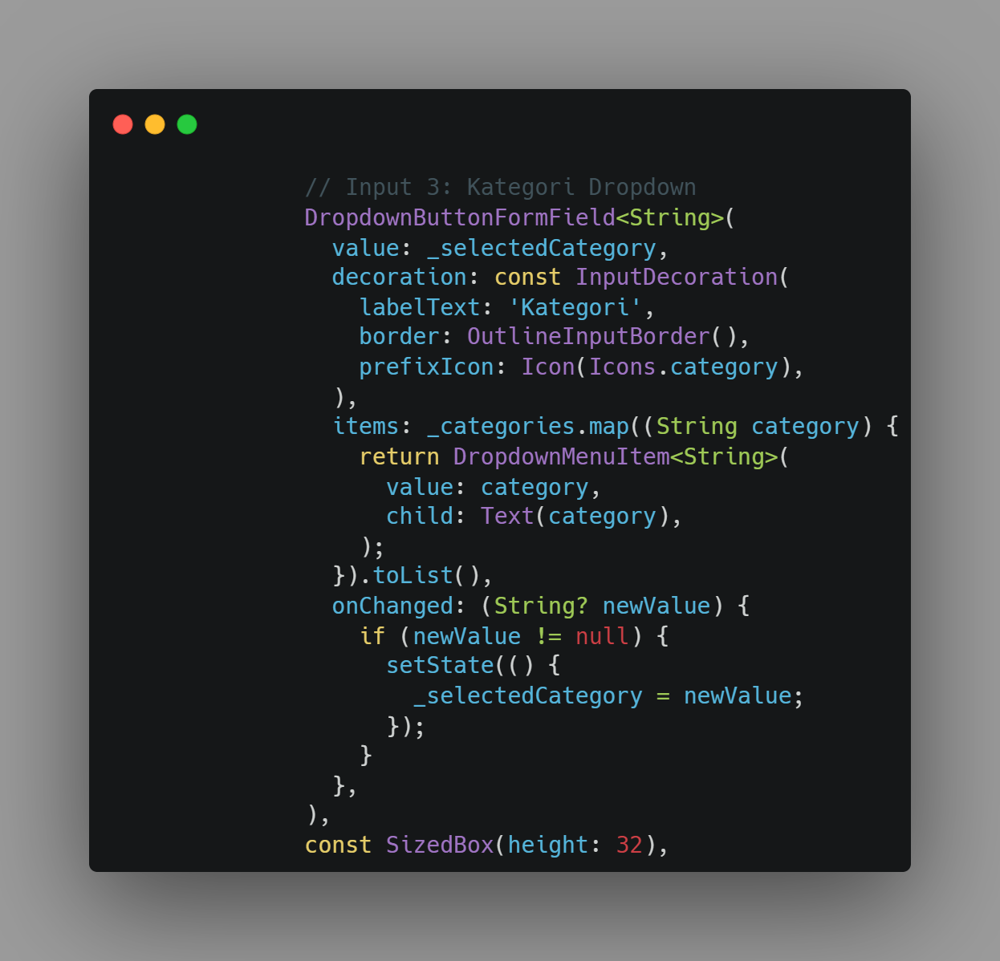
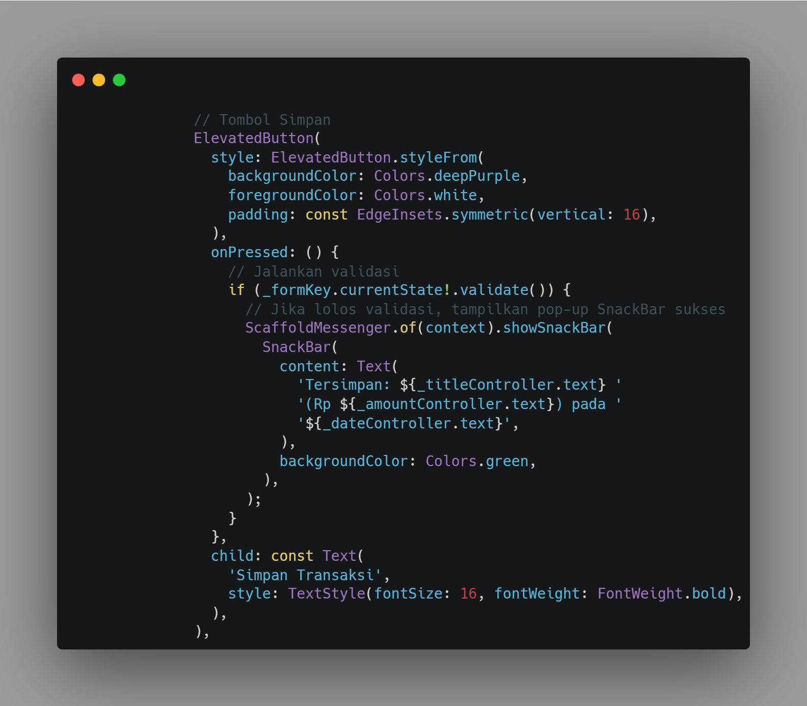
Terakhir, seluruh formulir dibungkus dengan 'SingleChildScrollView' agar layar tidak mengalami error layout saat keyboard muncul. Berikut adalah full code dan tampilan hasil akhir mockup formulir setelah dijalankan:
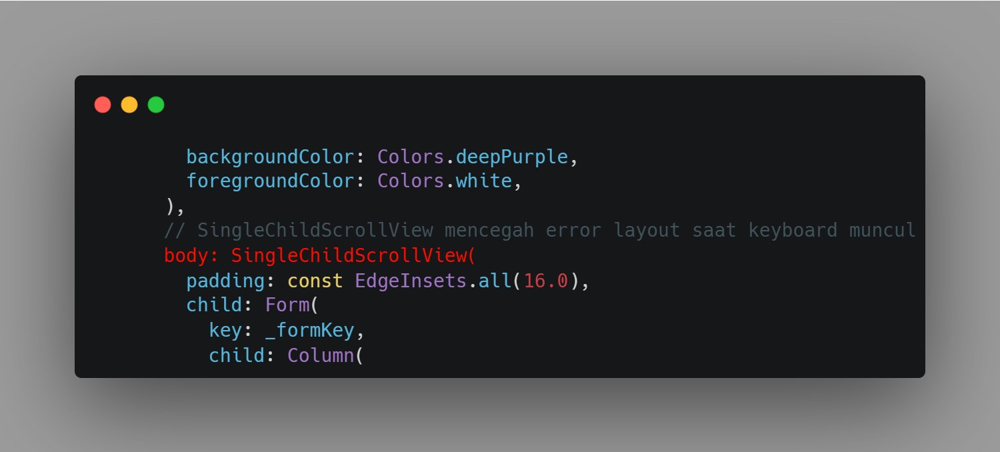
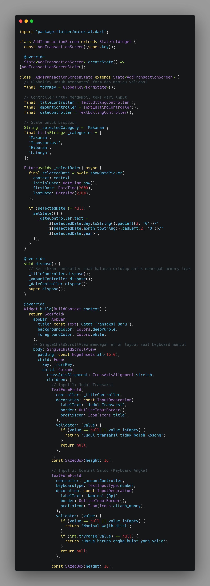
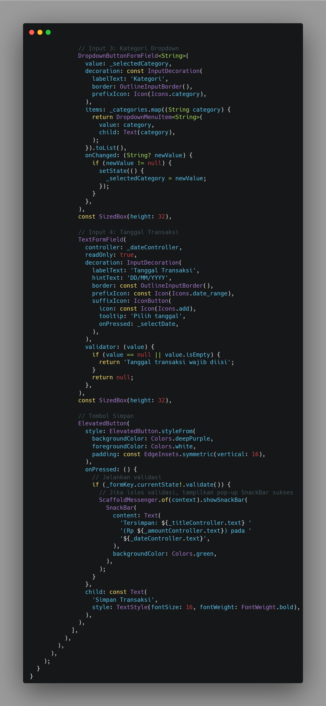
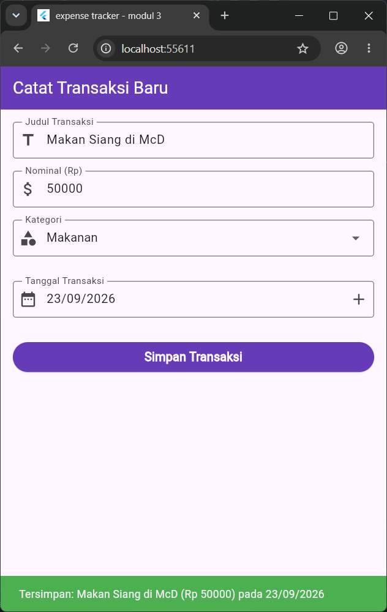
dan ini code dari main.dart:
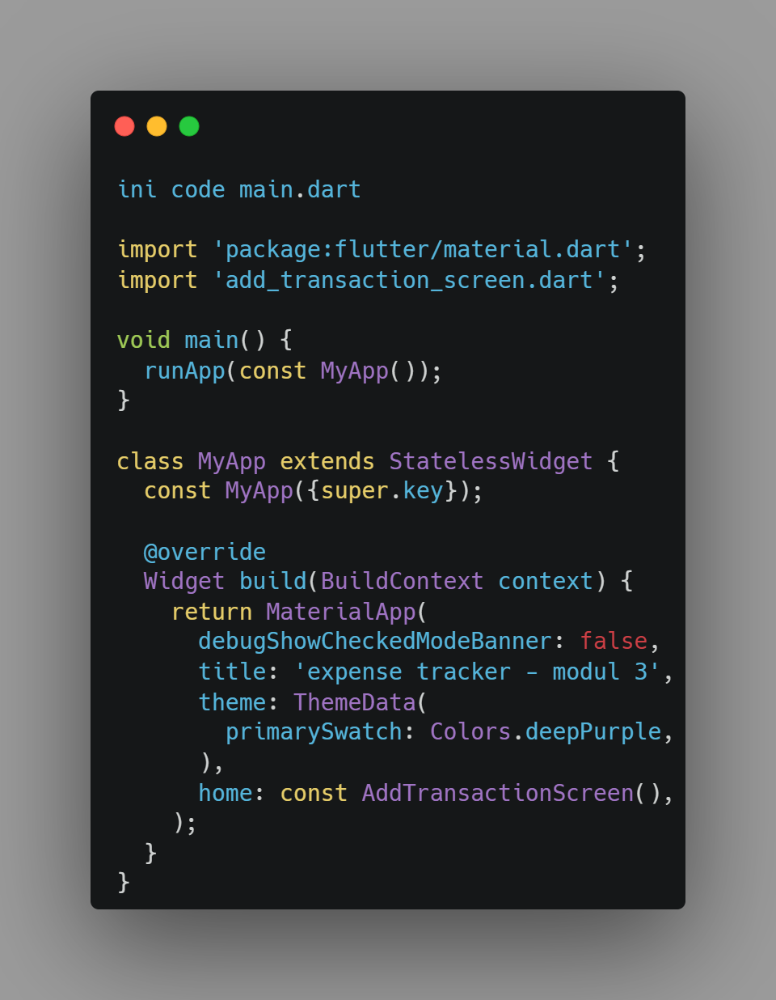
Menambahkan satu input baru sebelum tombol "Simpan Transaksi" untuk mengisi Tanggal Transaksi. Input dibuat menggunakan 'TextFormField' biasa dengan format teks DD/MM/YYYY, dilengkapi tombol ikon (misalnya ikon kalender) yang memanggil fungsi 'showDatePicker' agar pengguna dapat memilih tanggal melalui date picker bawaan Flutter. Kolom ini juga diberi 'validator' agar wajib diisi sebelum transaksi dapat disimpan.
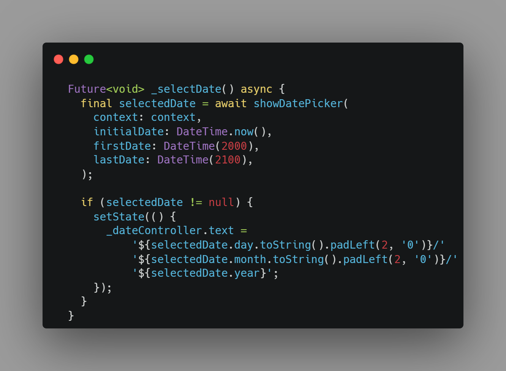
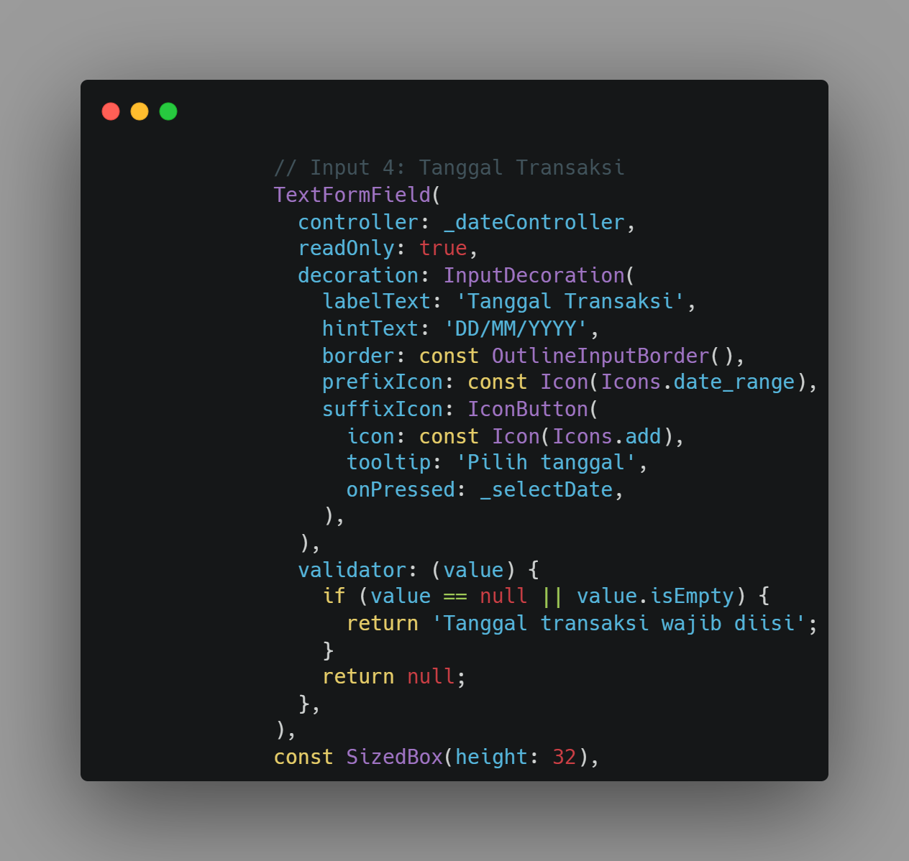
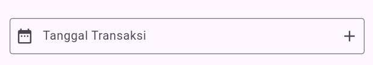
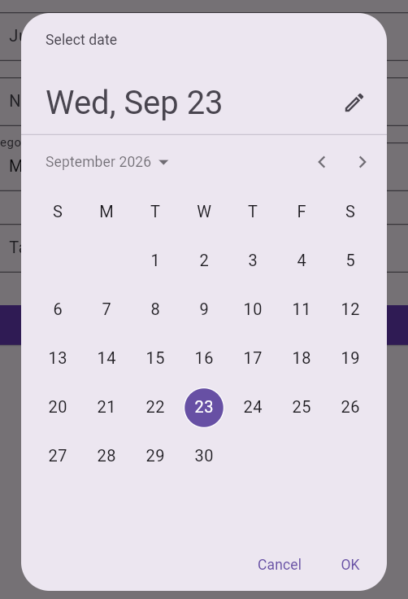